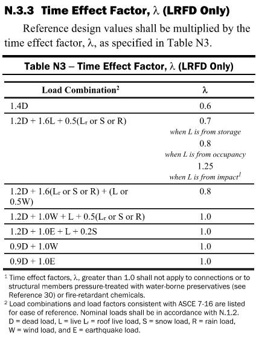
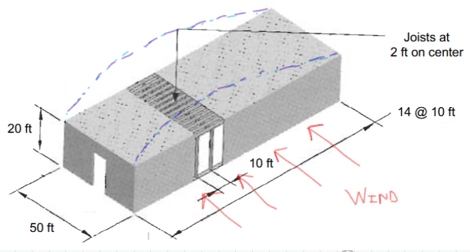

AREN 8510 · Masonry and Timber Design · Fall 2026 · Timber homework
Homework Q&A from previous years
Student questions from earlier offerings, answered by Prof. Todd Feldman.
Prof. Todd Feldman gathered the homework questions students asked in previous offerings of this course, together with his answers. They are listed below by assignment, using the current Canvas assignment titles. Questions are shown in bold; Prof. Feldman’s answers follow in the shaded boxes. Some items are general comments rather than student questions.
Note: these answers were written for earlier semesters and editions. Where an answer refers to a problem number, check it against the current assignment statement.
Assignments: Assignment 1 (Introduction to Wood Design) · Assignment 2 (Properties of Wood) · Assignment 3 (Design of Tension Members) · Assignment 4 (Design of Compression Members) · Assignment 5 (Design of Beams) · Assignment 6 (Design of Beam-Columns) · Assignment 7 (Design of Mechanical Connectors)
Assignment 1 (Introduction to Wood Design)
Q1. For Problems Nos. 1 & 2, is there a resource that has a design dead load for the 2x4, 2x6, & 2x8? The values listed in the ASCE 7-22 commentary seem to be very large.
You are correct. Multiple sources indicate lower values for joist framing versus those listed in ASCE7-22. The table identifies “DOUBLE WOOD FLOOR” which I interpret to mean joists spanning to intermediate (and heavier) support girders. (The graphic in Problem 1 is technically a “double wood” system because it shows a ridge beam although we do not know its size. Problem 3 is an example of “triple wood floor” framing – subpurlins to purlins to girders.) My recommendation is to ignore the floor joist values in ASCE7-22 and use the attached information (Appendix A — Weights of Building Materials; GE-1 Weights of Building Materials) for your homework. (BTW: Noticed that there are a lot of questions online from engineers regarding the “double floor” lumber weights shown in the table … so you are in good company!)
Q2. For Problem No. 3, the problem statement assumes a specific gravity of 0.5 for the wood members. I presume this is used in determining the weight of the wooden members. Using the specific gravity, what is the procedure to determine the weight?
You are correct – the specific gravity is used to calculate the weight of the framing members. In this case, \(G = 0.5\), so the member density is \(0.5 \times 62.4\) PCF (water) \(= 31.2\) PCF. Thus, a nominal 2X6 under these conditions weighs approximately \(31.2\,\text{PCF} \times 1\tfrac{1}{2}\,\text{IN} \times 5\tfrac{1}{2}\,\text{IN} \times 1\,\text{FT (length)} / 12^2 = 1.79\,\text{PLF}\). (Note that the Table 1B in the NDS Supplement provides lumber weights based on the density of the wood.)
Q3. Regarding No. 3, are we to use the tributary width of each member to find the line load on each member, or should we follow the load path from the subpurlin to the purlin, etc. and convert the reaction to an equivalent line load on the supporting member (ex. subpurlin to purlin: since the subpurlin is 2ft O.C, we divide the reaction from each subpurlin by 2ft/1ft to get our loading into plf.)?
For Problem 3, it is acceptable to determine the tributary dead load (PLF) by multiplying the unform load (PSF) by the tributary width (FT). Please note that the uniform load on the subpurlins (sub-beams) is different than the purlins (beams), and the uniform load on the purlins is different than the girders. (For example, the subpurlins do not carry the self-weight of the purlins or the girders.
Q4. For Problem No. 3a, the problem statement asks for the dead load over the entire roof. Is that only considering the roofing material and sheathing? Or the weight of the wooden members in addition to the roofing material and sheathing?
I would include the weight of all the wood framing (subpurlins, purlins, and girders) in the total dead load since you are provided sizes and a specific gravity. However, for the subpurlin line load calculations, you must deduct the purlin and girder contribution since the subpurlins do not support the self-weights of these members. Similarly, for the purlin line load calculations, you must deduct the girder contribution since the purlins do not support the girder self-weight.
Assignment 2 (Properties of Wood)
No student questions were received for this assignment. — assignment page
Assignment 3 (Design of Tension Members)
Q1. Just to clarify, if the member is in normal moisture conditions (i.e. < 19% MC), \(C_M\) is 1.0, not whatever is listed in the table, correct?
For dimension lumber, MC \(< 19\%\) → \(C_m = 1.0\) per Table 4A, 4B, and 4C. For timbers, MC \(< 19\%\) → \(C_m = 1.0\) per Table 4D. For structural glued laminated lumber, MC \(< 16\%\) → \(C_m = 1.0\) per Table 5A, 5B, 5C, and 5D.
Q2. For Problem No. 1, there is a disconnect between the Load Combinations found in the ASCE 7-22 & NDS 2024 related to snow.
My recommendation is that you use the load combination \(1.2D + 1.6S\) in your calculations. (The load combination is consistent with ASCE7-16 and the 2024 NDS.) You are correct that ASCE7-22 presents a modified load combination and the revised NDS appears to be out of sync with the code cycle.
We have seen that the overlapping code cycles often create discontinuities in the requirements. For example, the load factor for snow load in the load combinations in 2024 NDS uses a value of 1.6 versus 1.0 in ASCE7-22. (During the update to ASCE7, the snow load calculations were converted to “extreme” event or “strength-level” event similar to seismic events and assigned a load factor of 1.0.) Please be sure to be consistent with the application of the building codes and material codes. (For example, appears that for the foreseeable future, application of the NDS will need to be applied using the provisions of the earlier version of ASCE7.
Q3. My question is this: if we have dead and snow load, what is the time effect factor for LC2 (shown below)? There is no live load, so we can't determine the usage of the live load and thus the time effect factor for LC2. It is unlikely it will ever control without a live load, but what would the time effect factor be?

My interpretation is that LC2 would not apply in the absence of live load – particularly because of the additional clarifications regarding the characteristics of live load on the right. (If pushed, I would compare snow load to an occupancy load due its transient nature.) Numerically, for LC2, the 0.5 factor on snow load multiplied by the most “generous” time effect factor of 1.25 results in a multiplier of \(0.5(1.25) = 0.625\) for snow load versus a factor of \(1.6(0.8) = 1.28\) for snow load in LC3. Thus, LC3 will control design.
Q4. On Problem No. 2, how do we determine the reference design value, \(F_t\), from the Supplement? In the NDS I am directed to Table 5A, 5B, 5C, and 5D but I can't find the member listed in these sections. Is there somewhere else that contains these values for Glulam?
Problem statement indicates a “DF combination 5 glulam” so the appropriate information is in Table 5B, where the column labeled “Combination Symbol” is “5”, and the column labeled “Species” is “DF.”
Q5. On Problem No. 4, I have a hard time visualizing what the question is asking. Below, I have drawn out my understanding of the question so far and how the building will react. I don't understand where the tension member is located. I know that any of these members that curve due to the wall load will have a section of the member that will be in tension and the other in compression. Is that what this question is asking?

Your representation of the deflected diaphragm shape is correct: the diaphragm is visualized as a horizontal beam that spans between the end walls acting as supports. As you have drawn below, the edge of the roof near the label “WIND” will be in compression and the other edge will be in tension. The forces (compression and tension) are called “chord forces” and we can calculate the magnitude by dividing the midspan horizontal moment, \(M = wL^2/8\), by the distance between the chords, 50FT. Thus, \(T = C = M/50 = (wL^2/8)/50 = w(140^2)/400 = 49w\), where ”\(w\)” is the load applied to the roof edge in PLF. Note that the compression and tension chords are analogous to the flanges of a steel wide-flange beam. The steel flanges (timber chords) resist compression and tension and the steel web (in the timber scenario, the plywood roof sheathing) resists the shear forces. Another important consideration: The problem statement indicates that the chord forces will be resisted by “two 2X members spliced together.” We have not discussed connections, so the ends of the spliced members will be butted into each other but not connected for continuity (load sharing); hence, only one member will be carrying the chord force at the splice location.
Q6. I am currently working on question 5. Does the distributed dead load of 250 plf include the self-weight of the 2x Hem Fir studs and the 1/2" thick plywood?
Yes – it is acceptable to assume that the 250 PLF includes the self-weight of the framing members and the plywood.
Assignment 4 (Design of Compression Members)
No student questions were received for this assignment. — assignment page
Assignment 5 (Design of Beams)
Q1. Reference Problem 1: What dimensions should be used for calculations related to the 6X14 header?
NDS 4.1.3.3: “Beams and Stringers” refers to lumber of rectangular cross section, 5” (nominal) or more with width more than 2” greater than thickness … → 6X14 classified as “Beams and Stringers.”
NDS 4.1.5.3: For 5” (nominal) and thicker lumber, the net GREEN dressed sizes shall be used in computations … → NDS Supplement Table 1A indicates 1/2" off of the nominal thickness and 1/2" off the face width (depth) → 5 1/2" X 13 1/2"
NDS Table 1B under “Beams & Stringers” for 6X14 shows 5 1/2" X 13 1/2" dimensions with a section modulus of 167.1 IN\(^3\).
Q2. What is the unsupported length for Problem 5?
The physical unbraced length, \(l_u\), for a beam is the distance between points of lateral stability.
For Problem 5, the purlins are spaced at 8 FT on center.
Note: The beam has fixed support conditions at each end and the of the beam is in compression for a distance of approximately \(0.2113(8\ \text{FT})(6\ \text{spaces}) \approx 10\ \text{FT}\). (Reference the figure below the problem statement to identify the location of zero moment.)
Q3. What effective length should be used for Problem 5?
Remember to calculate the value of \(l_u/d\) to evaluate which conditions apply from Table 3.3.3.
Tension in the bottom: The maximum moment occurs at midspan. The top compression flange can only “buckle” between points of lateral support, indicating that the segments between the top flange behaves as a series of simple horizontal spans with an unsupported length of 8 FT on center. A conservative assumption would be to consider the loading as uniform and use 2.06 times the unbraced length in the stability calculations. (Alternatively, you could consider the shape of the moment diagram and judge that three concentrated loads in the positive moment zone permits the use of 1.54 times the unbraced length.)
Tension in the top: The maximum moment occurs at the supports. The bottom compression zone is fixed at one end and will “buckle” at the first point of lateral support, indicating that the bottom flange behaves as a cantilever. A conservative assumption would be to consider the loading as uniform and use 1.33 times the unbraced length in the stability calculations.
Q4. The problem statement for Problem 5 indicates that the intersecting purlins supported by the glulam beam provide lateral stability bracing at 8 FT on center. A literal interpretation means that the laterally unbraced length for both positive and negative moments is 8 FT. However, the purlins are resting on top of the glulam beam and – in my opinion – would not adequately (directly) prevent bottom of the beam from buckling in the negative moment zone near the support (where the compression is in the bottom of the beam). Although points of inflection are not technically considered “brace points” because there is not a physically element to resist the lateral buckling, the inflection point does represent a change in the sing of the moment. For the problem, the laterally unbraced length in the negative moment zone is approximately 10.1 FT from the support and could (more conservatively) be used in the calculations.
Q5. The NDS states that "For bearings less than 6" in length and not nearer than 3" to the end of a member, the reference compression design value perpendicular to grain shall be permitted to be multiplied by the following bearing area factor (equation)". The slide indicates that the distance from the edge must be greater than 3". For all instances in this assignment, I believe we are not permitted to use the equation. Furthermore, for Problems No. 2 and No. 3, the distance is larger than 6".
I agree that the bearing area factor, \(C_b\), does not apply to the problems for Assignment #5. The modification is only permitted at bearing length less than 6 IN and located more than 3 IN from the end of the member. Thus, bearing at beam ends cannot utilize the increase and point loads resting on a supporting member must be less than 6” wide parallel to the beam span. (For example, a 4X4 post bearing on a girder at midspan would benefit from the modification.)
In summary:
- Problem 1: Bearing at ends – 3.10.4 indicates use the reference value.
- Problem 2: Bearing at ends – 3.10.4 indicates use the reference value. (Purlins connected with hangers – not bearing.)
- Problem 3: Bearing at ends – 3.10.4 indicates use the reference value. (Not enough information to evaluate purlin reactions; hence, bearing conditions.)
- Problem 4: (Technically not required by problem statement but should be checked for required bearing length.) Bearing at ends – 3.10.4 indicates use the reference value. (Not enough information to evaluate midspan reaction; hence, bearing condition.)
- Problem 5: Bearing at ends – 3.10.4 indicates use the reference value. (Not enough information to evaluate purlin reactions; hence, bearing conditions.)
Assignment 6 (Design of Beam-Columns)
Q1. Problem 1: The roof sheathing provides compression flange bracing for bending but does not provide bracing top and bottom for compression. Thus, the unbraced length is zero for bending and the unbraced length for compression is the full length of the chord. The ends of the chord can be considered pinned such that the effective length equals the unbraced length (\(l_e = l_u\)).
Q2. Problem 2: The studs are spaced at 16 IN, a reasonable assumption is that there are at least three studs, and a reasonable assumption is that wall sheathing exists and provides the ability to span lateral loads to adjoining joists. Hence, the repetitive use factor, \(C_r\), appears to be applicable. (Note: The instructor solution conservatively neglects the repetitive use factor.) It is a reasonable assumption that the exterior sheathing and the interior wall finish provide lateral stability to the weak axis of the stud such that strong-axis buckling controls for compression (\(l_e = 126\) IN and \(d = 5.5\) IN). Similarly, the exterior sheathing and the interior wall finish provide lateral stability to the compression flange in bending of the stud such that the unbraced length for flexure is essentially zero. Finally, Equation (3.9-4) is only applicable to flatwise or biaxial bending.
Assignment 7 (Design of Mechanical Connectors)
Q1. The Bearing Area Factor, \(C_b\), equals 1.0 for member ends and for bearing lengths greater than 6 IN at any other location. The factor is applicable for bearings less than 6 IN in length and located more the 3 IN form the end of the member. Example 1: The interior support of a continuous beam with a support length less than 6 IN measured in the span direction. Example 2: A post less than 6 IN wide measured in the span direction and located more than 3 IN from the end of the supporting member. (In the second example, the factor applies to the supporting member since the post is loaded in compression parallel to the grain.)
Q2. Example 4: Wood Structural Panel Gravity Design – Page 6: Span length used for deflection equations. Section 9.4.1 of the NDS notes that 0.25” should be added to the clear span for 2” nominal framing. The center-to-center spacing of the 2” nominal framing is 24” so the clear distance is \(24'' - 2 \times 3/4'' = 22\tfrac{1}{2}''\). The examples indicate that the deflection span is equal to the clear span plus 2 1/2". However, I believe the deflection span should be the clear span plus 2 x 3/4" to define center-to-center spacing plus 2 x (1/4”) for each of the framing members; thus, the addition to the clear span should be 2” versus 2 1/2" in the solution.
Q3. Regarding fire resistance for CLT members: Truth be told, I have limited experience with designing wood framing for fire resistance and have relied in suppliers to help the design meet the code requirements. Chapter 16 of the 2024 NDS does provide some guidance and a deeper understanding can be found at www.awc.org in the Fire Design Specification (FDS).
Q4. What is the difference between \(E(\text{true})\) and \(E(\text{app})\) in the NDS Supplement tables for Modulus of Elasticity (MOE)?
- Beam deflection has two components – deformation from bending and deformation from shear.
- For “common” beam conditions (span to depth ratio \(> 2\)), the flexural contribution is significantly larger than the shear contribution.
- An “apparent” MOE is typically published for wood structural products that encompasses both deflection components (about a 5% reduction in stiffness for shear deformation).
- A “true” MOE value is sometimes referenced, which corresponds to only the bending portion of deflection and thus is “shear-free.”
- For “deep beam” conditions (span to depth ratio \(< 2\)), the designer must add the shear deflection component to bending deflection when using the higher \(E(\text{true})\).
Q5. If the plies in plywood or OSB alternate directions, why are the values of stress parallel to the strength axis and perpendicular to the strength axis so different for a 4-ply structural panel?
A 4-ply panel is actually a special case of 3-ply construction. The 4-ply panel is composed of two face veneers or layers, and a cross band of two parallel-laminated veneers, which create their own layer. Therefore, 3-ply and 4-ply panels are both 3-layer constructions. Plywood can be a little confusing, because of the way the manufacturers define the layers/plies. A “layer” is different from a “ply.” Plywood will always have an odd number of layers, but one layer might consist of two plies running in the same direction. What we see as a "4-ply" plywood, is actually 3 layers, with the middle layer consisting of two plies running in the same direction. The top and bottom layers will also run in the same direction (parallel to the length of the sheet), but since they are separated from each other, they are 1 ply layers, each.
Q6. What is the difference between Structural I and Exposure 1?
It is important to understand that the term Structural I refers to certain specialized strength and stiffness characteristics of wood structural panels while the term Exposure 1 refers to the glue bond durability of a wood structural panel.
Q7. What is the difference between Exterior and Exposure 1?
Exterior panels are suitable for applications subject to long-term exposure to weather or moisture. Exposure 1 panels may be used for applications where construction delays may be expected prior to providing protection. Exposure 1 panels are made with the same exterior adhesives used in Exterior panels. However, because other compositional factors may affect bond performance, only Exterior panels should be used for long-term exposure to weather.
Note: APA Rated Plywood Sheathing Exposure 1, commonly called “CDX” in the trade, is sometimes mistaken as an Exterior panel and erroneously used in applications for which it does not possess the required resistance to weather. “CDX” should only be used for applications as outlined under Exposure 1 above. For sheathing grade panels that will be exposed long-term to weather, specify APA Rated Sheathing Exterior (C-C Exterior plywood under PS 1).
Q8. Do we need to include the self-weight of the beam in the homework calculations?
Only Problem 4 of Assignment #3 requires consideration of the beam self-weight. [Note: in this year's homework numbering, this is Assignment 5, Problem 4.]
Note: Self-weight is always a consideration but the assigned problems included an estimate of the framing weight in the problem statement. The project will require you to develop an estimate of the framing self-weight in your designs.
Q9. What are the deflection limits for framing supporting a plaster ceiling?
Table 1604.3 of the International Building Code (IBC) provides common deflection limits.
For roofs supporting plaster ceilings, deflection is limited to \(L/360\) for roof live load (or snow load) and limited to \(L/240\) for a combination of dead load plus roof live load (or snow load).
Note: Except in unique cases, these are pretty common deflection limits.